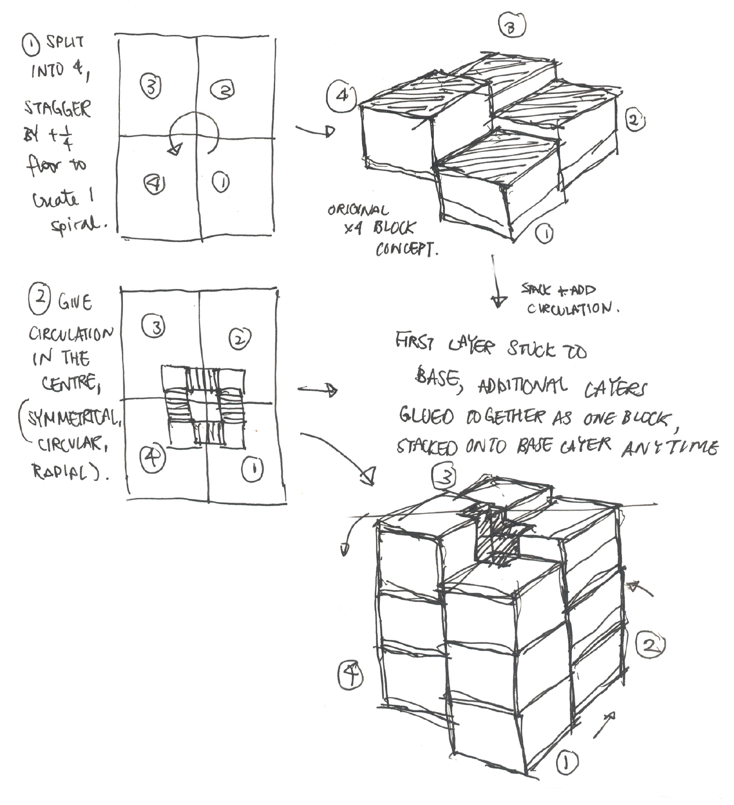

Learning Commons on Campus
01/2021 - 05/2021
Design Studio U2
Benjamin Franklin Centre, The Chinese University of Hong Kong
The learning commons takes from the precedent the concept of stacking blocks in a spiral upwards rotation. Situated on the small slope, this learning commons has two entrances on different levels that additionally serves as a pasageway for students. A florist, on the first floor, serves as the minor programme.
The blocks in this concept is stacked such that they ascend by a quarter of a floor so that 4 blocks form one full floors. The blocks form many rooms in this learning commons, allowing privacy for either loud, collaborative learning, or intimate individual studying. The quiet study areas are situated at the very top, away from the hustle and bustle of the streets below. For most blocks, one face is fully open to allow in natural sunlight. The spiraling staircase has vertical railing which stretches up to form a central core. The third floor also features a balcony area for students to either relax or explore.
